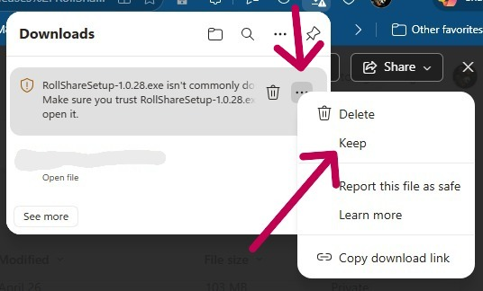
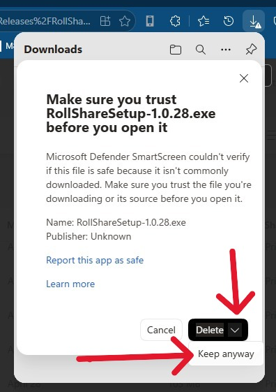

Download the Windows installer below. If you see a Windows SmartScreen or Defender warning, click More info → Run anyway. Allow the installer to make changes when prompted.
Because RollShare is new it hasn't been downloaded much yet, Microsoft Defender SmartScreen hasn't see it and will display some safety dialogs (I wanted to let you know here so you're not surprised). The dialogs are setup so that users will not accidently download files but it also makes it difficult if you actually want to download the files. Here are some notes / tips on how to download.
Tip 1: The first dialog is in the browser download which looks like this in my browser. I have to click on the 3 dots to access the menu that allows you to select "Keep"

If you see a browser warning, choose Keep to save the installer.
Tip 2:This is the second dialog I get on my laptop, this one is even harder to select keep. You have to click on the down caret right next to the word Delete to show the "Keep anyway" option.

If prompted, click Keep anyway to proceed with the download.
Next steps: After installing, open RollShare, follow the on-screen instructions to pair your phone, and select DiceCamera in your call app.